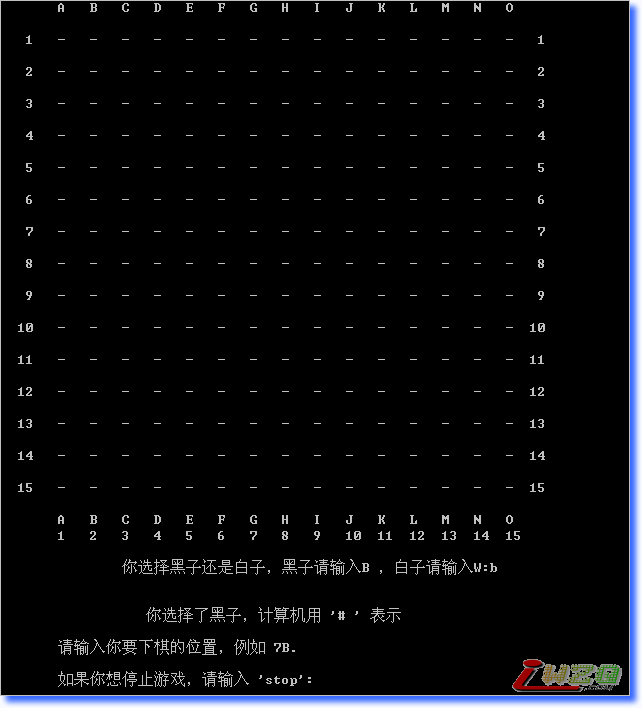

最强的基于静态评估的五子棋程序
#1 最强的基于静态评估的五子棋程序 作者：有志青年 发表时间：2008-5-22 21:03:58
感谢网友gerbo分享这个软件
该软件是dos环境下的，可以正常运行，我试过了，棋力还不错

 wzqdos.rar
wzqdos.rar#2 Re:最强的基于静态评估的五子棋程序 作者：无棋 发表时间：2008-5-26 12:38:55
谢谢，下来试试
#3 Re:最强的基于静态评估的五子棋程序 作者：唐海勇 发表时间：2008-5-28 10:57:19
有源码吗?我要
#4 Re:最强的基于静态评估的五子棋程序 作者：gerbo 发表时间：2008-5-29 22:54:31
也是偶尔发现的，没发现源代码
#5 Re:最强的基于静态评估的五子棋程序 作者：唐海勇 发表时间：2008-5-30 12:28:08
在哪个网站发现的,作者是谁啊,都不知道吗?
#6 Re:最强的基于静态评估的五子棋程序 作者：gerbo 发表时间：2008-5-30 13:44:32
作者的QQ是：573533948 ，开发并发布日期为2007年3月，请与作者联系。#7 Re:最强的基于静态评估的五子棋程序 作者：月明竹青曲悠 发表时间：2008-6-4 10:12:48
试过了，棋力可以的，就是下起来很麻烦，改进的简单点就好了哦！！
#8 Re:最强的基于静态评估的五子棋程序 作者：龙吟风 发表时间：2008-6-22 9:24:52
这个作者是 四川绵阳的
不知道现在怎么样了！！！！！
#9 Re:最强的基于静态评估的五子棋程序 作者：gerbo 发表时间：2008-6-23 23:44:44
 现在应该是在外地工作吧，希望全家平安~！
现在应该是在外地工作吧，希望全家平安~！
#10 Re:最强的基于静态评估的五子棋程序 作者：终结者 发表时间：2008-7-1 20:50:31
我对他的代码很感兴趣
#11 Re:最强的基于静态评估的五子棋程序 作者：nlxhys 发表时间：2008-7-2 10:23:46
棋力不怎么样的。
一下就搞赢
#12 Re:最强的基于静态评估的五子棋程序 作者：幻 发表时间：2008-7-20 14:27:45
怎么是无禁的?
#13 Re:最强的基于静态评估的五子棋程序 作者：石磊 发表时间：2008-9-1 21:14:30
棋力还不错?
有没有搞错啊,怎么垃圾的,要怎么赢,怎么赢